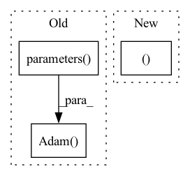

Pattern ID :13649
Before Change
C = torch.nn.Linear(128, 10)
models = Models({"G": C, "C": torch.nn.Identity()})
optimizers = Optimizers(
{"G": torch.optim.Adam(C.parameters() , lr=0) , "C": DoNothingOptimizer()}
)
adapter = wrapper_type(Classifier(models=models, optimizers=optimizers))
score, _ = adapter.run(After Change
C = torch.nn.Linear(128, 10)
models = Models({"G": C, "C": torch.nn.Identity()})
optimizers = Optimizers((torch.optim.Adam, {"lr": 0} ))
adapter = wrapper_type(Classifier(models=models, optimizers=optimizers))
score, _ = adapter.run(
{"train": train_dataset, "target_train": target_train},In pattern: SUPERPATTERN
Frequency: 3
Non-data size: 3
Instances Fragment ID: 45766600
Project Name: kevinmusgrave/pytorch-adapt
Commit Name: 44e300ad15f77257a8bd6f8f5806507a6f64267c
Time: 2021-10-11
Author: tkm45@cornell.edu
File Name: tests/validators/test_snd_validator.py
M Class Name: TestSNDValidator
N Class Name: TestSNDValidator
M Method Name: test_snd_validator_with_framework(1)
N Method Name: test_snd_validator_with_framework(1)
M Parent Class: unittest.TestCase
N Parent Class: unittest.TestCase
M File Name: tests/validators/test_snd_validator.py
N File Name: tests/validators/test_snd_validator.py
M Start Line: 81
M End Line: 84
N Start Line: 82
N End Line: 82
Before Change
self.loss_func = None // TODO: 根据配置文件支持选择特定的 Loss Func 目前并未实装
def train(self, train_dataloader, eval_dataloader):
optimizer = optim.Adam( filter(lambda p: p.requires_grad,
self.model.parameters() ),
lr=self.config["learning_rate"],
weight_decay=self.config["L2"])
scheduler = optim.lr_scheduler.ReduceLROnPlateau(
optimizer, "max", patience=self.config["lr_step"],
factor=self.config["lr_decay"],
threshold=self.config["schedule_threshold"])After Change
print("==>Train Epoch:{:0>2d} Loss:{:.4f} learning_rate:{}".format(
epoch, avg_loss, lr))
// eval stage
avg_eval_acc, avg_eval_loss = self._valid_epoch(eval_dataloader, self.model,
eval_total_batch, self.config["verbose"])
print("==>Eval Acc:{:.4f}".format(avg_eval_acc))
metrics["accuracy"].append(avg_eval_acc) Fragment ID: 45766598
Project Name: libcity/bigscity-libcity
Commit Name: 022010c6ffc7ff440e276127d6e6341751e03d69
Time: 2021-04-14
Author: 33283819+WenMellors@users.noreply.github.com
File Name: trafficdl/executor/traj_loc_pred_executor.py
M Class Name: TrajLocPredExecutor
N Class Name: TrajLocPredExecutor
M Method Name: train(3)
N Method Name: train(3)
M Parent Class: AbstractExecutor
N Parent Class: AbstractExecutor
M File Name: trafficdl/executor/traj_loc_pred_executor.py
N File Name: trafficdl/executor/traj_loc_pred_executor.py
M Start Line: 24
M End Line: 74
N Start Line: 33
N End Line: 71
Before Change
t.optim.Adam(actor_m.parameters(),
lr=1e-3))
critic_g_server.manage_model(critic_m,
t.optim.Adam(critic_m.parameters() ,
lr=1e-3) )
if rank in (0, 1):
actor_g_server.start()
critic_g_server.start()After Change
critic = smw(Critic(c.observe_dim)
.to(c.device), c.device, c.device)
// in all test scenarios, all processes will be used as reducers
actor_g_server, critic_g_server = grad_server_helper(
lambda: Actor(c.observe_dim, c.action_num),
lambda: Critic(c.observe_dim),
learning_rate=5e-3 Fragment ID: 45766599
Project Name: iffix/machin
Commit Name: a0808cd7c6aec893be667f2ef3ff9b5ceac29f02
Time: 2020-07-19
Author: hanhanmumuqq@163.com
File Name: test/frame/algorithms/test_a3c.py
M Class Name: TestA3C
N Class Name: TestA3C
M Method Name: a3c(0)
N Method Name: a3c(1)
M Parent Class: object
N Parent Class: object
M File Name: test/frame/algorithms/test_a3c.py
N File Name: test/frame/algorithms/test_a3c.py
M Start Line: 73
M End Line: 103
N Start Line: 79
N End Line: 89